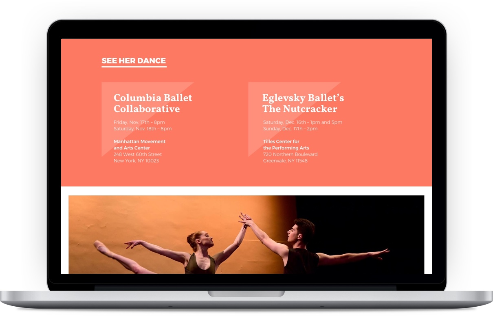

Website redesign for a professional dancer
My role: UX designer, visual and interaction designer
Ali Paige Block is a professional ballet dancer based in New York. She has danced with various companies in New York and elsewhere, including Eglevsky Ballet, Eugene Ballet Company, and Sarasota Ballet. Ali needed a responsive website to give choreographers and artistic directors a quick way to contact her and view her experience — and hire her!
Design challenge
The objectives of the website would be to:
- Make sure Ali’s contact information was easy to access, especially on a mobile
- Provide a succinct but comprehensive overview of Ali’s dance experience
- Showcase Ali’s dance technique and ability
1. Content and information hierarchy
With these objectives in mind, I worked with Ali and her sister Amanda to organize and prioritize information into two pages — a Landing and About page. We decided that Ali’s upcoming shows would be one of the most important things to display first, as choreographers generally hire dancers only after seeing their live performances. I worked with them to turn a simple Word doc into an outline for a site that would be both informative and visually compelling.
2. Moodboard and visual inspiration
I looked into other dance websites and found that aesthetic styles varied widely — from ones that were more formal and subdued (Milwaukee Ballet), to ones that were more vibrant, colorful, and contemporary (Alvin Ailey Dance Theater). I prepared a moodboard for Ali on Invision to better understand her preferences.
Ali ended up preferring something in the “classic” camp, but didn’t want to be overly formal.
3. Visual styles
I maintained a minimal design style in order to highlight Ali’s dance photography. I chose fonts that maintained both formality and vibrance, and colors matched the hues of her photos.
After a couple iterations and founds of feedback with Ali, we decided we wanted a more minimal experience with less colors and less design elements. You can view the final product on the live site.
4. Mobile design
Because many people would be viewing Ali’s resumé on the go, I ensured the mobile experience on the site would be seamless.

5. Development and launch!
I worked with my developer to ensure everything looked perfect on desktop and mobile, and we launched the site with the help of Amazon S3. Shivam and I made sure to basic SEO keywords and structured data tags for sharing on social media.
Ali and her sister were extremely happy with the designs. This was a great project for me, especially as I’m also a ballet dancer and always happy to support my fellow dancers!